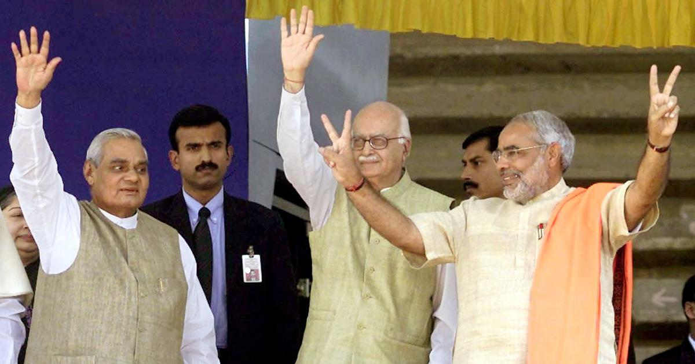

Atal Bihari vajpayee
A true statesman of Modern India

Atal Bihari Vajpayee (left) with L K Advani (centre) and Narender Modi (right)
The Timeline of Shri Atal Bihari Vajpayee
- Atal Bihari vajpayee was an Indian Politician, statesman and poet.
- Vajpayee was born into a Hindu Brahmin family on 25 December 1924 in Gwalior, Madhya Pradesh.
- He graduated in BA in Hindi, English and Sanskrit. He completed his post-graduation with an MA in Political Science from DAV College, Kanpur.
- His activism started in Gwalior with Arya Kumar Sabha, the youth wing of the Arya Samaj movement, of which he became the general secretary in 1944. He also joined the Rashtriya Swayamsevak Sangh (RSS) in 1939 as a swayamsevak, or volunteer.
- During his tenure as prime minister, India carried out the Pokhran-II nuclear tests in 1998
- The administration of Narendra Modi declared in 2014 that Vajpayee's birthday, 25 December, would be marked as Good Governance Day.
- In 2015, he was conferred India's highest civilian honour, the Bharat Ratna, by the President of India, Pranab Mukherjee.
- He died on 16 August 2018 of age-related illness.
You should read more about this increadible leader of the Nation on his Wikipedia page.